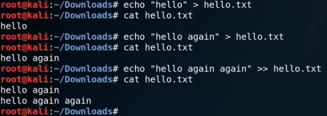

>> is for switching lines

touch is just to create
nano can edit the file in cmd
gedit can open the gedit app to edit

update your system
apt purge *xxxxx*
remove everything about xxxxx
git clone .......(git clone address)
clone a repo into current directory.